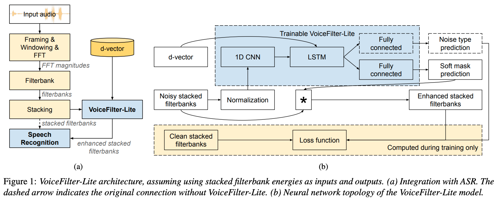

News:
Paper: arXiv
Slides: PDF
Authors: Quan Wang, Ignacio Lopez Moreno, Mert Saglam, Kevin Wilson, Alan Chiao, Renjie Liu, Yanzhang He, Wei Li, Jason Pelecanos, Marily Nika, Alexander Gruenstein
Abstract: We introduce VoiceFilter-Lite, a single-channel source separation model that runs on the device to preserve only the speech signals from a target user, as part of a streaming speech recognition system. Delivering such a model presents numerous challenges: It should improve the performance when the input signal consists of overlapped speech, and must not hurt the speech recognition performance under all other acoustic conditions. Besides, this model must be tiny, fast, and perform inference in a streaming fashion, in order to have minimal impact on CPU, memory, battery and latency. We propose novel techniques to meet these multi-faceted requirements, including using a new asymmetric loss, and adopting adaptive runtime suppression strength. We also show that such a model can be quantized as a 8-bit integer model and run in realtime.
System architecture:

Lectures:
Video demos:
Citation:
@inproceedings{Wang2020,
author={Quan Wang and Ignacio Lopez Moreno and Mert Saglam and Kevin Wilson and Alan Chiao and Renjie Liu and
Yanzhang He and Wei Li and Jason Pelecanos and Marily Nika and Alexander Gruenstein},
title={{VoiceFilter-Lite: Streaming Targeted Voice Separation for On-Device Speech Recognition}},
year=2020,
booktitle={Proc. Interspeech 2020},
pages={2677--2681},
}
| Noisy audio input | Ground truth transcript of target speaker | Recognized text (without VoiceFilter-Lite) | Recognized text (with VoiceFilter-Lite) |
|---|---|---|---|
| HAVE YOU BEEN IN PARIS MUCH THESE LATE YEARS | Have you been in Paris much easier | Have you been in Paris much these late years | |
| WILL THAT BE ALL NO | No | Will that be all No | |
| AND THEN THE WIND IS NOT BLOWING IN MY DIRECTION THIS MORNING | directions this morning | And then the wind is not blowing in my direction this morning | |
| YES BUT IF I SHOULD ALREADY ASK FOR SOMETHING WHAT | Yes but if I should already ask for something what | ||
| OH HOW WICKED PEOPLE ARE | Oh how wicked people are | ||
| I CANNOT ALLOW THE EXAMINATION TO BE HELD IF ONE OF THE PAPERS HAS BEEN TAMPERED WITH THE SITUATION MUST BE FACED | I can't allow the examination to be held if one of the papers has been tampered with the situation must be faced | ||
| BUT HER GREETING TO CAPTAIN LAKE WAS MORE THAN USUALLY HAUGHTY AND FROZEN AND HER FEATURES I FANCIED PARTICULARLY PROUD AND PALE | was more than usually hottie and frozen and her features I fancied particularly proud and pale | but her greeting to Captain Lake was more than usually hottie and frozen and her features I fancied particularly proud and pale | |
| SURELY YOU ARE NOT THINKING OF GOING OFF THERE | Actually you are not thinking of going off there | ||
| AND I DECLARE IT'S TOO BAD THAT IT IS | the difference | I declare it's too bad that it is | |
| MOST PEOPLE CLING TO THE SUPERNATURAL | moose | most people think to the supernatural | |
| AND THE OLD GENTLEMAN WAS SO DELIGHTED WITH HIS SUCCESS THAT HE HAD TO BURST OUT INTO A SERIES OF SHORT HAPPY BITS OF LAUGHTER THAT OCCUPIED QUITE A SPACE OF TIME | cellulite with his success that he had to burst out into a series of short happy bits of laughter that occupied quite a space of time | and the old gentleman was so delighted with his success that he had the burst out into a series of short happy bits of laughter that occupied quite a space of time | |
| A RING OF AMETHYST I COULD NOT WEAR HERE PLAINER TO MY SIGHT THAN THAT FIRST KISS | meaning of amethyst then that first kiss | a ring of amethyst I could not wear here plainer to my side then that first kiss |